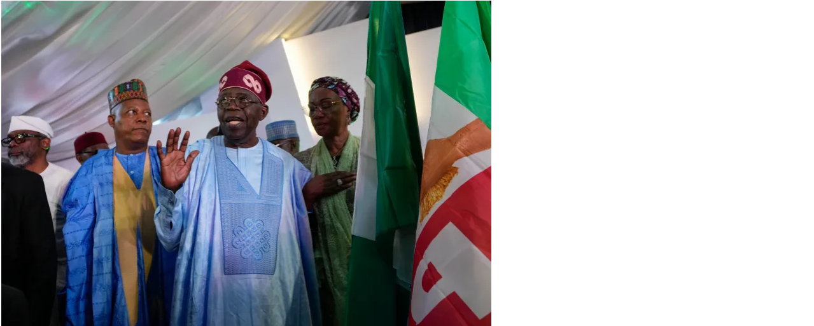

DR Congo leader urges Macron to back sanctions against Rwanda
Macron says he would wait for the end of several peace negotiation efforts before considering such a step.
Democratic Republic of Congo (DRC) President Felix Tshisekedi has urged visiting French President Emmanuel Macron to pursue international sanctions against Rwanda for its alleged military support to M23 rebels.
Macron said he was waiting for the end of several ongoing peace negotiation efforts before considering such a step. But he promised that France would be “faithful to its role as an unwavering ally of [DRC] to defend its integrity and sovereignty.”
The eastern DRC has been mired in conflict for decades, with armed groups vying for control of the region’s vast mineral resources. Most recently, the DRC has accused Rwanda of supporting M23 rebels, who have seized control of large swaths of the country’s east.
French President Emmanuel Macron, left, meets with Democratic Republic of the Congo President Felix Tshisekedi in Kinshasa
Peace talks have taken place in Nairobi, Kenya and Angola’s capital, Luanda. Regional leaders have called for a ceasefire in eastern DRC and for the M23 rebels to withdraw from the territory they are holding.
Macron says era of French interference in Africa is ‘over’
President Emmanuel Macron has said the era of French interference in Africa was “well over” as he began a four-nation tour of the continent to renew frayed ties.
Anti-French sentiment has run high in some former African colonies as the continent has become a renewed diplomatic battleground, with Russian and Chinese influence growing in the region.
“The age of Francafrique is well over,” Macron said in remarks to the French community in the capital Libreville, referring to France’s post-colonisation strategy of supporting authoritarian leaders to defend its interests.
Bola Tinubu is now Nigeria’s president-elect. What happens next?

Abuja, Nigeria – Nigeria’s ruling All Progressives Congress (APC) candidate Bola Tinubu has been declared the winner of the presidential election, triggering mixed reactions across the West African country.
On Wednesday, the chairman of the Independent National Electoral Commission, Mahmood Yakubu, announced that Tinubu had won 37 percent of the vote in Saturday’s election and, “having satisfied the requirements of the law, is hereby declared the winner and is returned elected”.
“This is a serious mandate – I hereby accept it. To serve you, … to work with you and make Nigeria great,” Tinubu said in an acceptance speech as supporters cheered “jagaban”, his local chieftain title.
How violence robs Nigerians of their votes
Lagos, Nigeria – As Tobi Olayinka set out to vote on Saturday morning in Nigeria’s Lagos state, she took along a backpack filled with food and drinks and an umbrella against the sun.
The 31-year-old first-time voter believed she could make a difference with her vote. The Lagosian was determined to stick around her polling centre until the results came out.
Olayinka is one of the many young Nigerians who got enthused about voting with the emergence of the Labour Party’s presidential candidate Peter Obi, a third frontrunner in what used to be a two-horse race between big parties – the ruling All Progressives Congress (APC) and the opposition People’s Democratic Party (PDP).